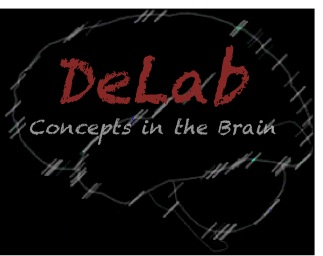
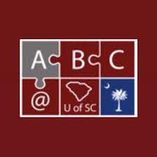
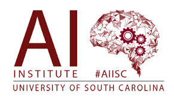

Headed by Dr. Rutvik Desai, the Desai Lab uses functional neuroimaging and brain
stimulation in healthy
adults to map how language and concepts are represented in the brain.

As part of the neuroimaging team in the Aging Brain Cohort at the University of South
Carolina (ABC@USC), I investigate how the healthy brain changes across the lifespan.
Led by Drs. Julius Fridriksson and Chris Rorden, the Center for the Study of Aphasia
Recovery (C-STAR) seeks to improve aphasia treatment effectiveness and diagnosis of language
impairments following stroke.

In collaboration with Dr. Amit Sheth and the Artifical Intelligence Institute, I am
using machine learning to classify types of language impairment in stroke survivors using functional
and structural neuroimaging.